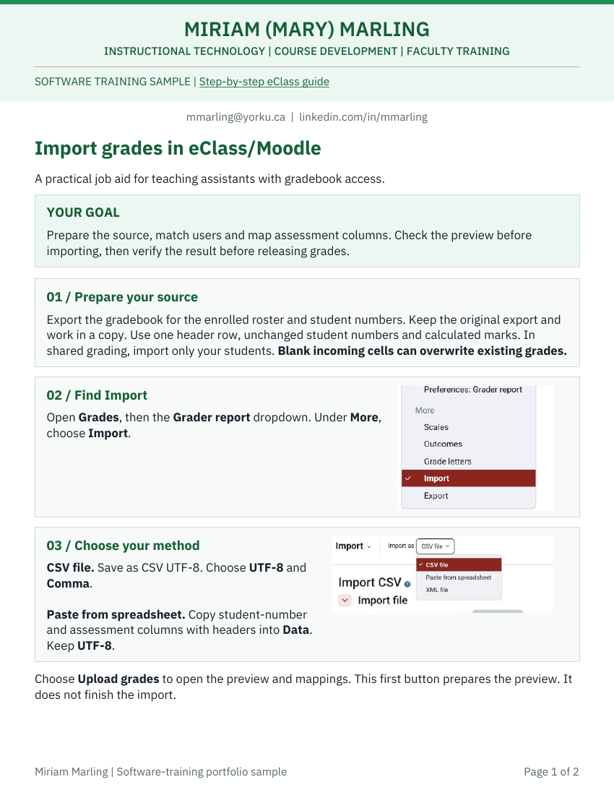
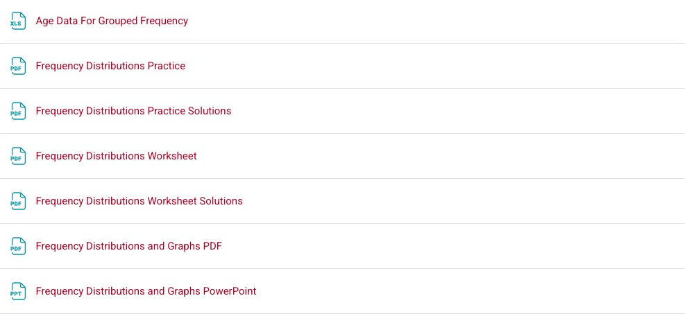
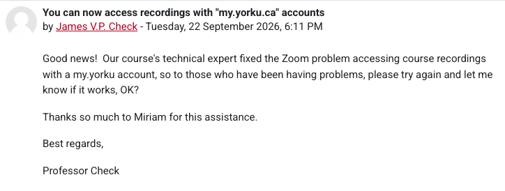

CODE + SYSTEMS + PRACTICAL SUPPORT
Programmer.
Computer expert.
Course development, software training and hands-on technical support. Programming and computer expertise carry the work from source materials to functioning courses, with faculty and TA support throughout.
Android, Linux, macOS and Windows. Unfamiliar systems learned quickly, with the same programming and troubleshooting skills.
INDEPENDENT MATLAB / PSYCHTOOLBOX2013
% Written by Miriam Marling December 2013
Screen(w,'Flip'); % show new image
[cx,cy,buttons]=GetMouse(w,mouseIndices);
% ...
if buttons(2)
break;
endA personal learning and technology portfolio, selected for WES’s Training and Instructional Design Specialist role.
Faculty reference · Dr. James V. P. Check ↗COURSE CREATION + TECHNICAL DELIVERY
Original code.
Working course experiences.
32 seconds. Original programming, self-grading assessments, course delivery and current interactive work. Attribution appears in the reel.
Inspect the code and its context ↗TRAINING SAMPLE / LEARNER VIEW
A software lesson for teaching assistants. Choose a destination to try the coaching.
Choose the learner identifier.
Student_IDChoose a destination. See why it works or what needs another look.
Continue to the full 3-decision lesson ↗REFERENCE AT THE POINT OF WORK
Put the screen beside the action.

Actual interface screens make the identifier and assessment choices easier to find while working.
Open the 2-page sample ↗Adapted from the 32-page teaching assistant manual.
ILLUSTRATED COURSE-SUPPORT CASE
Restore access to learning.
Course recordings unavailable to students using my.yorku.ca accounts.
Resolved recording access for those accounts.
“Thanks so much to Miriam for this assistance.”
Dr. James V. P. Check, September 22, 2026. View the actual announcement ↗
Screen(w,'Flip');
York course examples. A working demonstration of training, reference materials and practical technical support for the WES role.
COURSE DEVELOPMENT
Build the course.
Complete eClass courses, presentations and typeset statistics materials. Three sections moved fully online in under a month in 2020.
See the course work ↗TRAINING + SUPPORT
Support the team.
Faculty and TA instruction through screen sharing, guides and video. An authored 32-page manual supports teaching, Zoom and grade reporting.
Open the guide ↗LMS DEVELOPMENT
Keep it working.
Moodle/eClass development since 2013, through the interface and PHP/XML. Course setup, content maintenance, assessment configuration and reporting.
See faculty recognition ↗02 / COURSE DEVELOPMENT
Complete courses.
Ready for delivery.
Statistical Methods I and II, York University. Section D, 2026-2027.

From handwritten notes to a course package.
Students found the handwritten notes difficult to use. Transformed the notes and equations into a typeset course package in under a week. Proofread the notes, full solutions, self-quizzes and interactive visualizations.
The first half reached students in September 2026 following the professor’s approval.
Development details
Directed the recent modernization using AI-supported workflows, with proofreading and the professor’s review before delivery. Earlier MATLAB programming and hand-coded assessments were independently developed.
Maintain the complete online course content in eClass/Moodle, using the interface and PHP 5/XML alongside hand-coded LaTeX equations and assessments. Train faculty and teaching assistants through screen sharing, written guides and videos.
Developed from the professor’s and teaching assistant’s source notes and existing course materials.
COURSE SUPPORT
“Thanks so much to Miriam for this assistance.”
Dr. James V. P. Check, York University. Faculty reference available.
Course announcement, September 22, 2026.
Resolved access to Zoom course recordings for students using my.yorku.ca accounts. The announcement acknowledges that support.
Faculty support also includes adding Zoom meetings to eClass. The TA manual supplies illustrated setup guidance.
View the announcement excerpt

SOFTWARE TRAINING / WORKING SAMPLE
Before you import.
You have prepared Assignment 2 marks. The gradebook already has the assessment item. Three decisions will connect the right learner with the right mark.
The learner's task
Match the learner and the assessment, then resolve a preview mismatch before importing.
Audience. Teaching assistants with gradebook access.
New portfolio lesson based on the existing TA guide. The practice labels and preview counts are fictional. No records are imported.
- Match the learner
- Match the assessment
- Check the preview
Choose an identifier.
READY FOR THE NEXT STEP
Match. Map. Verify.
You resolved all three decisions. In a real import, verify the result against the source and check exceptions. Use the job aid below.
This is feedback for this practice run. It is not a measured training outcome. No answers or learner records are sent.
Watch the 55-second walkthrough
Identifier, assessment and preview decisions, demonstrated with actual interface crops and a labelled fictional practice example.
Read the transcript ↗ · Synthetic narration. Animated instructional walkthrough, rather than a recording of a live grade import. No student data appear.
TAKE IT INTO THE WORK
Five checks for the next import.
- Match student numbers to ID number.
- Map marks to the intended existing Grade item.
- Check preview counts, identifiers, assessment names, scale and marks.
- After success, compare the Gradebook with the source and check exceptions.
- Retain the backup and import copy.
Controls can vary by platform version and institutional setup. Follow your course's approved workflow.
Design choices and evaluation plan
Practise the decisions
Adapted a task from the TA manual into three decisions. Learners match an identifier, select the assessment destination and resolve a preview mismatch before importing.
Explain the consequence
Each choice receives coaching. Learners can retry, consult the five-point job aid or watch the walkthrough. Actual interface crops sit alongside a labelled fictional preview.
Evaluate in a pilot
Proposed evaluation. Observe first-choice accuracy and requests for help. Ask learners to explain an identifier mismatch, then follow up on import errors and support requests. Use the findings to revise the lesson with the subject expert. No training-effectiveness or business-outcome results have been measured for this sample.
Directed this portfolio adaptation with assisted tools, using the existing TA guide as the workflow source.
PROGRAMMING
Build interactive practice.
Independent MATLAB programming handles display, input and response. The current course explorer connects scores, probability and visual feedback. Read the actual excerpts beside their work examples.
Display, input and response
Programmed a visual experiment to display a stimulus, capture mouse input and respond to a selection. The same programming fundamentals support interactive learning.
MATLAB / Psychtoolbox / actual source excerpt
% Written by Miriam Marling December 2013
Screen(w,'Flip'); % show new image
[cx,cy,buttons]=GetMouse(w,mouseIndices);
% ...
if buttons(2)
break;
endIndependently written MATLAB/Psychtoolbox experiment for graduate research, December 2013.
Explore the source ↗Make the calculation visible
Designed the explorer to connect a raw score with its z-score, probability and position on the curve. Learners can change a value and compare the numbers with the graph.
JavaScript / Canvas / actual source excerpt
var z = (x-mu)/sd;
// readouts
var below = Phi(z), area;
var m = mode();
if(m==='below'){ area = below; }
else if(m==='above'){ area = 1-below; }
else if(m==='between'){ area = Math.abs(below-0.5); }
else { area = 2*(1-Phi(Math.abs(z))); } // tails beyond +/- |z|
zEl.textContent = (z>=0?'+':'') + z.toFixed(2);
areaEl.textContent = area.toFixed(4);Directed development with assisted implementation. This JavaScript excerpt comes from the working course activity below.
Explore the source ↗01 / INTERACTIVE LEARNING
Explore the normal distribution.
Learn how a raw score relates to the mean, standard deviation and probability under a normal distribution.
Learner goal
Interpret a z-score and explain why the same raw score can occupy a different position in two distributions.
Learning design
Predict a result, manipulate the parameters, compare numerical and visual feedback, then check the explanation.
Work represented
Directed development of the course explorer with assisted implementation. Added the guided practice and knowledge check for this portfolio.
CHECK YOUR UNDERSTANDING
What changed when the standard deviation doubled?
Keep μ = 100 and X = 130. Change σ from 15 to 30.
Prepared in eClass for the upcoming z-score week. The course activity remains hidden until that week’s release.
03 / SOFTWARE TRAINING
Give staff guidance
they can use on the job.
For WES, pair process instructions with the screen staff will use, so they can find the right action while working.
An illustrated reference for course delivery.
Authored a TA manual covering teaching, Zoom, assessments and grade reporting. This sample explains the grade-import workflow, with actual eClass screens showing the identifier and assessment choices that need particular care.
The download is a two-page portfolio adaptation. The full manual remains in its teaching context.
FOR WES'S KNOWLEDGE MANAGEMENT AND OPTIMIZATION TEAM
Support WES staff as processes change.
Develop the materials with subject experts, deliver the training and stay involved when questions arise. Bring practical teaching, course development and programming to WES’s Knowledge Management and Optimization team.
Use learner feedback to keep explanations, practice and job aids useful as policies, processes and systems change.
Discuss the role View professional profile ↗